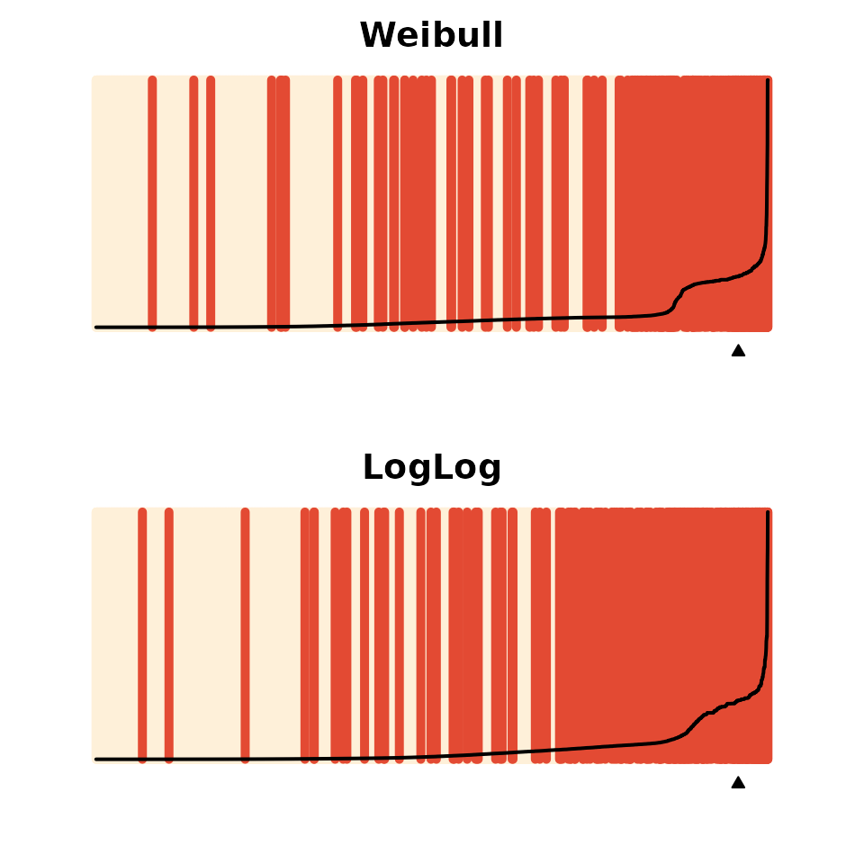

spduration Split-population Duration Regression Packagevignettes/introduction.Rmd
introduction.RmdAbstract
We present an implementation of split-population duration regression in the spduration R package and an application to data on military coups. The statistical model accounts for units that are immune to a certain outcome and not part of the duration process the researcher is primarily interested in. We provide insights that if immune units exist, we can significantly increase the predictive performance compared to standard duration models. The package includes estimation and several post-estimation methods for split-population Weibull and Loglogistic models.
Duration models are an important class of statistical estimators that take into account the duration dependency of specific outcomes. A prominent example is that the risk of dying depends on the age of an individual. Newborns are at a greater risk of dying, but as they grow older this risk quickly declines and then gradually starts to increase again after the age of 9-10. While individual behavior (smoking, exercising, diet) and structural factors (health care, health regulations, urban vs rural) can increase or decrease the probability of dying over time, the underlying risk is time dependent and impacts on all individuals.
However, there are conditions under which not all individuals have the same underlying risk to experience a specific outcome and might not even be at risk at all. Consider the risk of acquiring a viral infection like the common flu. Let us initially assume that everyone is at risk of infection, and individual behavior (e.g., good hygiene) and structural factors (e.g., workplace) determine whether individuals catch the flu. Under these assumptions a standard duration model should provide us with efficient estimates of how different behavioral and structural factors impact on the general baseline risk. But, there might be individuals that are immune to the flu in the overall population–because they received vaccination, had the specific flu virus in the past, or have some other characteristic that makes it impossible for them to attract the disease. In this instance we have two underlying populations: an at risk population and an immune one. If the immune population is relatively large, estimates using a standard duration model will be biased and predictions inaccurate.
Regular duration models, where baseline risk is modeled by some distribution of time, were originally developed in health and demographic research and grew naturally from life tables and survival records for medical patients. Basic formulations of such models, like the parametric exponential or Weibull regressions or semi-parametric Cox regression, implicitly assume that all subjects or units under observation, including right-censored observations, will eventually experience the event of interest. This assumption may be violated in many substantive areas and empirical applications, where a sub-population of units or individuals will never experience an event, and thus are effectively ``cured’’.
The insight that populations might be split in regard to their baseline risk has been formulated as early as 1949 by Boag (1949) and Berkson and Gage (1952), who were researching survival rates in cancer patients. In their application some fraction of patients survived because their cancer was cured, while others relapsed after apparent remission due to levels of disease below detectable thresholds. The development of duration methods in health and medicine has also shaped the terminology conventionally used for such models. For example, split-population duration models are also referred to as cure rate models. Similarly, the basic concepts like survival and failure rates reference the survival of humans.
Yet the intuition underlying split-population duration models has led to applications in a broad range of subject areas outside demographics and medicine. In an early and foundational application that reached beyond medicine, Schmidt and Witte (1989) examined criminal recidivism using data on close to 10,000 prisoners from the North Carolina prison system in the late 1970’s and early 1980’s to identify factors that influence whether a criminal relapses at all, and if so which factors are related to the amount of time between prison stints. This work already includes a full formulation of a model with independent covariates for both the duration equation and the risk or cure equation, although only with subject-specific covariates rather than time-varying covariates for multiple data points per individual.
In a complementary set of research from public health, Douglas and Hariharan (1994) use data from the United States to model the age at which individuals began to smoke, and Forster and Jones (2001) examine the impact of tobacco taxes on smoking and quitting decisions. DeYoung (2003), an economist, models the failure of new commercial banks in the US during the 1980’s. Svolik (2008) uses a split-population duration framework to examine whether democratic regimes persist or revert to authoritarianism, and when. Building on this effort, split-population duration models have also been used, along with other models, to produce regular predictions for five different forms of political conflict for the Integrated Crisis and Early Warning System (ICEWS) project (Ward et al. 2013) and to model irregular leadership changes for the Political Instability Task Force (PITF; Beger, Dorff, and Ward 2014).
Conventional duration models assume that all subjects will eventually fail, die, or experience a specific outcome. The likelihood for a data point with survival time \(t\) is thus the failure rate \(f(t)\) at that time or the probability of survival beyond \(t\), \(S(t)\), depending on whether the subject has already experienced the event (\(\delta_i\)) or is right-censored (\(1-\delta_i\)): \[\begin{eqnarray} \mathcal{L} = \prod_{i=1}^N \left( f(t_i)\right)^{\delta_i} \times \left( S(t_i) \right)^{1-\delta_i} \end{eqnarray}\]
The major modeling question in this setting, which we will return to below, is the choice of a function form (e.g., exponential, Weibull, or log-logistic) describing the underlying hazard rate \(h(t) = \frac{f(t)}{S(t)}\) over time.
The cumulative failure rate (\(F(t) = 1 - S(t)\)) over time converges to 1, meaning all subjects fail eventually. In the examples of applied research discussed above this assumption is untenable. Some cancer patients are cured after treatment, most young people never become regular smokers, and many states will not experience the kind of violence that persists in other parts of the world. The presence of a large sub-population which is not at risk for an event, will in practice inflate estimates of the survival fraction, and reduce hazard estimates for all subjects. This is the case because the underlying risk is estimated based on subjects that genuinely will fail and those that are cured. Hence, such a model will over predict the hazard for subjects that are not at risk (cured), and under predict for those who are at risk of eventually experiencing the event of interest.
We can incorporate the presence of a sub-population, where we label the subpopulation at risk with \(\pi\), by rewriting the likelihood as:1
\[\begin{align} \mathcal{L}\{\theta|(t_{1}, \dots, t_{n})\} &= \prod_{i=1}^{N} \left(\pi_i f(t_i)\right)^{\delta_i} \times \left((1-\pi_i) + \pi_i S(t_i)\right)^{1-\delta_i} \end{align}\]
Crucially, this split-population framework is primarily useful in contexts where sub-populations are not clearly or easily identifiable. For example, there is a clear sub-population in a model of the age at first pregnancy for humans—men—which researchers can easily identify and exclude from their data. Less clear are answers to questions such as whether a cancer patient is cured or not cured given that they have no visible signs of cancer following treatment or have hit the 5-year disease free survival mark. In such situations split-population models provide a way to infer sub-populations in a probabilistic fashion.
Early efforts focused only on the cure rate (\(1 - \pi\)) and treated it as a constant, but we can model membership in the subpopulation with its own covariates through a logistic link function:
\[\begin{align} \pi_i &= \frac{1}{1 + e^{-z_i \gamma}} \end{align}\]
Where \(z_i\) is a vector of covariates for a subject at a given time. For interpretation, it is important to note that with time-varying covariates, the risk (or cured) estimate for a subject is particular to a given time point rather than constant over all time periods in the spell.2 Depending on the covariates, the risk estimate for a subject can thus fluctuate over time. To ease interpretation, it might be convenient to restrict covariates in the logit risk model to slow-moving, stable covariates in order to produce stable risk estimates for subjects.
The last component to complete the likelihood is the choice of a distribution for the shape of the hazard rate. The spduration package implements two hazard rate shapes, Weibull and log-logistic:
\[\begin{eqnarray*} \textrm{Weibull} \\ f(t) & = & \alpha \lambda (\lambda t)^{\alpha - 1} e^{-(\lambda t)^\alpha} \\ S(t) & = & e^{ -(\lambda t )^\alpha } \\ h(t) & = & \alpha \lambda (\lambda t)^{\alpha-1} \\ \textrm{Log-logistic} \\ f(t) & = & \frac{ \alpha \lambda (\lambda t)^{\alpha-1} }{ (1 + (\lambda t)^\alpha)^2 } \\ S(t) & = & \frac{1}{ 1+ (\lambda t)^\alpha } \\ h(t) & = & \frac{ \alpha \lambda (\lambda t)^{\alpha-1} }{ 1+ (\lambda t)^\alpha } \end{eqnarray*}\]
Where \(\lambda = e^{-x_i\beta}\) is a parameter of covariates. The Weibull density allows for hazard rates that are increasing, constant, or decreasing over survival time, while the log-logistic density also can fit rates that have a peak at a particular survival time.
Given the density distribution, the main quantity of interest is the conditional hazard \(h(t, \pi)\), where both the risk/cure probabilities and hazard are conditional on survival to time \(t\):
\[\begin{eqnarray} h(t, \pi) = \frac{f(t, \pi)}{S(t, \pi)} & = & \frac{ \pi(t) \times f(t) }{ (1-\pi(t)) + \pi(t) \times S(t) } \\ \pi(t) & = & \frac{ 1-\pi }{ S(t) + (1-\pi) (1 - S(t)) } \end{eqnarray}\]
For a given unconditional risk rate \(\pi\), the probability that a subject with survival time \(t\) is in the risk set decreases over time, because an increasing number of surviving cases consist of immune or cured (\(1-\pi\)) cases that will never fail. In the hazard rate, the failure rate in the numerator is conditional on the probability that a case is in the risk set, given survival up to time \(t\), and the numerator is an adjusted survivor function that accounts for the fraction of cured cases by time \(t\), which is \(1-\pi(t)\).
In order to illustrate the package functionality, we examine a model of coups d`etat in Belkin and Schofer (2003). Belkin and Schofer’s paper lends itself to re-analysis with a split-population duration model because they explicitly distinguish long-term structural risk factors for coups from more short-term triggering causes that can explain the timing of a coup in an at-risk regime. They argue that many countries never experience coups because coups are effectively impossible due to structural factors, while others that never experience coups are nevertheless at risk due to a different configuration of those same factors. Using language which fits nicely with the class of models described above, they write “[t]riggers are not the source of the original risk, and in the absence of structural causes, the presence of triggering factors alone cannot lead to a coup. Hence, triggers should not be equated with coup risk. Rather, they are factors that may determine the exact timing of a coup in regimes that suffer from high coup risk” (Belkin and Schofer 2003, 598).
For their empirical test Belkin and Schofer develop a measure of “structural coup risk” which incorporates factors such as the strength of democratic institutions and civil society, and a recent history of successful coups. However, they implement a logistic regression model, which does not capture the process as described in their quote above. This is because the logistic regression model assumes that all observations are at risk for a coup (i.e., the probability of a coup is non-zero for all observations). Since their structural coup risk indicator is developed precisely to distinguish between at risk and “immune” cases, the split-population model allows one to examine whether the indicator effectively does so.
We begin by loading the package and the Belkin and Schofer replication data, and formatting the data to add several variables needed by the split-population duration model.
## Registered S3 method overwritten by 'quantmod':
## method from
## as.zoo.data.frame zoo## countryid year couprisk recentcoups rwar
## 1 909 1960 0.2200166 0 0
## 2 909 1961 0.2200166 0 0
## 3 909 1962 0.2200166 0 0
## 4 909 1963 0.2200166 0 0
## 5 909 1964 2.5702426 1 0
## 6 909 1965 2.5702426 2 0The data are documented in ?bscoup, which also gives a reference to the source citation. It consists of a little more than 5,000 observations of 162 countries from 1960 to 2000. Each row corresponds to a country c in year t. Excluding the country and year identifiers, the data include 12 variables, including a binary indicator for successful coups.
str(bscoup)
## 'data.frame': 5463 obs. of 14 variables:
## $ countryid : num 909 909 909 909 909 909 909 920 920 920 ...
## $ year : num 1960 1961 1962 1963 1964 ...
## $ couprisk : num 0.22 0.22 0.22 0.22 2.57 ...
## $ recentcoups: num 0 0 0 0 1 2 4 0 0 0 ...
## $ rwar : num 0 0 0 0 0 0 1 0 0 0 ...
## $ milreg : num 0 0 0 1 0 1 1 0 0 0 ...
## $ wealth : num NA NA NA NA NA ...
## $ instab : num 4 2 9 9 12 13 12 NA 0 4 ...
## $ coup : Factor w/ 2 levels "no","yes": 1 1 1 2 2 2 1 1 1 1 ...
## $ africa : num 0 0 0 0 0 0 0 0 0 0 ...
## $ eurnam : num 0 0 0 0 0 0 0 1 1 1 ...
## $ samerica : num 0 0 0 0 0 0 0 0 0 0 ...
## $ camerica : num 0 0 0 0 0 0 0 0 0 0 ...
## $ regconf : num 0 0 0 0.019 0.019 ...
## - attr(*, "datalabel")= chr ""
## - attr(*, "time.stamp")= chr "30 Jul 2003 12:15"
## - attr(*, "formats")= chr [1:14] "%9.0g" "%9.0g" "%9.0g" "%9.0g" ...
## - attr(*, "types")= int [1:14] 102 102 102 102 102 102 102 102 102 102 ...
## - attr(*, "val.labels")= chr [1:14] "" "" "" "" ...
## - attr(*, "var.labels")= chr [1:14] "country code .pr89" "year coded" "" "" ...
## - attr(*, "version")= int 7
## - attr(*, "label.table")=List of 1
## ..$ hadcoup: Named int [1:2] 0 1
## .. ..- attr(*, "names")= chr [1:2] "no" "yes"Altogether the data include 290 coups, which makes for a positive rate of slightly more than 5% of all observations.
##
## 0 1
## 5173 290Before we can estimate a split-population duration model with the data, we need to add several variables that capture the survival characteristics of the data.
bscoup <- add_duration(bscoup, "coup", unitID = "countryid", tID = "year", freq = "year", ongoing = FALSE)
## Warning in attempt_date(data[, tID], freq): Converting to 'Date' class with
## yyyy-06-30The add_duration function takes as input a data frame with a binary response variable–“coup”–that measures the occurrence of the event, or failure, recorded over discrete time periods. We assume that the data frame is in a cross-sectional time-series format that consists of multiple observations over time for a number of subjects, in our case countries.
Within the framework of duration modeling, these data conceptually consist of “spells”, which are repeated observations of a unit from the time they enter the data (left-censoring) or after they experienced the event of interest, until the next event or the end of observation (right censoring). The table below shows how a single country could have two spells during the observation period. Observations for Portugal make up two spells, one that begins in 1960, when our data start, to a coup event in 1975, when a second spell starts and continues until either the next coup or the data end. Canada on the other hand experienced no coups and so observations for that country from 1960 to 2000 make up one spell.
| Country | Year | Coup | Spell ID | Duration |
|---|---|---|---|---|
| Portugal | 1960 | 0 | 1 | 1 |
| … | … | 0 | 1 | … |
| … | 1975 | 1 | 1 | 16 |
| Portugal | 1976 | 0 | 2 | 1 |
| … | … | 0 | 2 | … |
| … | 2000 | 0 | 2 | 20 |
| Canada | 1960 | 0 | 3 | 1 |
| … | … | 0 | 3 | … |
| … | 2000 | 0 | 3 | 41 |
The add_duration functions identifies spells in the data and returns the data frame with several additional variables needed for estimation. The most important among these are a counter of elapsed time in a spell, “duration”. It also codes that a spell was at risk (“atrisk==1”) if it ended in a failure event, and not at risk otherwise. These are then used as response variables for the formula in the spdur function.
Though the data used in this example are recorded annually, the function supports annual, monthly, or daily data and will try to convert the tID input to class “Date” given the provided argument in freq, as indicated by the warning it returned in the example above. This can be avoided by converting any numeric dates to R dates first.
Another important question is how to handle consecutive 1’s in the response variable provided. This is controlled with the ongoing argument. In some cases like civil war occurrence, the y variable records all years during which a country experienced a civil war. Here ongoing should be set to true so that the models try to predict the onset of the civil war, but disregard ongoing conflicts (failure is set to NA for these cases, dropping them from analysis). With ongoing set to false, successive 1’s in y are treated as distinct and new failures, and kept in the analysis. This makes sense for discrete, short-term events like coups. Countries can experience distinct coups in successive years.
The spdur function is the primary function in the package and produces a regression model object of class spdur which can then be used with further methods. We begin by fitting first a Weibull and then a log-logistic split-population duration model using the coups data, including the measure of coup risk in the logit (risk) equation.
weib_model <- spdur( duration ~ milreg + instab + regconf, atrisk ~ couprisk + wealth + milreg + rwar + regconf + samerica + camerica, data = bscoup, distr = "weib", silent = TRUE) loglog_model <- spdur( duration ~ milreg + instab + regconf, atrisk ~ couprisk + wealth + milreg + rwar + regconf + samerica + camerica, data = bscoup, distr = "loglog", silent = TRUE)
Using the summary function on either model object will produce standard output showing the model formula, estimates for the duration and risk equations, and test statistics with \(p\)-values. These can be exported by calling xtable directly on the “spdur” object.
library("xtable") tbl <- xtable(loglog_model, caption = "Coup model with log-logistic hazard", label = "loglog_table") print(tbl, type = "html", caption.placement = "top", comment = FALSE, include.rownames = FALSE)
| Parameter | Estimate | Std. Error | t value | Pr(>|t|) |
|---|---|---|---|---|
| Dur_(Intercept) | 2.40 | 0.21 | 11.43 | 0.00 |
| Dur_milreg | -1.13 | 0.21 | -5.46 | 0.00 |
| Dur_instab | -0.09 | 0.02 | -4.79 | 0.00 |
| Dur_regconf | -2.52 | 2.16 | -1.16 | 0.24 |
| log(alpha) | -0.45 | 0.06 | -7.09 | 0.00 |
| Risk_(Intercept) | 2.93 | 1.87 | 1.57 | 0.12 |
| Risk_couprisk | 0.59 | 0.32 | 1.82 | 0.07 |
| Risk_wealth | -0.36 | 0.28 | -1.29 | 0.20 |
| Risk_milreg | 10.82 | 9.29 | 1.16 | 0.24 |
| Risk_rwar | -0.53 | 0.94 | -0.56 | 0.58 |
| Risk_regconf | -5.43 | 5.62 | -0.97 | 0.33 |
| Risk_samerica | 2.10 | 1.45 | 1.44 | 0.15 |
| Risk_camerica | -0.39 | 0.73 | -0.53 | 0.59 |
The table shows estimates from the duration equation, beginning with the intercept, and then estimates from the risk equation. The duration component of the model is in accelerated failure time format and the coefficient estimates are on the log of expected time to failure. The negative coefficient for military regimes for example means that the expected time to a coup is shorter in military regimes than non-military regimes, holding all other factors constant. In the risk equation, positive coefficients mean higher risk of coup. Thus, military regimes have a higher risk of experiencing a coup.
One may also use the AIC and BIC function to calculate the information criterion statistics for spdur objects. In our example, both models are close enough in both statistics to be indistinguishable, so we will continue to focus on the log-logistic form.
matrix(c( AIC(weib_model), AIC(loglog_model), BIC(weib_model), BIC(loglog_model) ), ncol = 2, dimnames = list(c("Weibull", "Loglog"), c("AIC", "BIC")))
## AIC BIC
## Weibull 1329.908 1348.972
## Loglog 1331.214 1350.278The package includes two types of plots that show the estimated hazard rates and predictive performance, respectively. The hazard rates can be plotted by either calling plot_hazard directly, or with plot(x, type = "hazard"), on a fitted spdur object. It will produce a plot of the conditional hazard, which is the probability of survival conditional on the covariates in the risk and duration equations, and conditional on survival up to time t, when holding all covariates at their sample means. The function calculates the average hazard rate as well as 90% confidence intervals, which are produced by simulating values from the estimated sampling distributions of the model parameters.
By default the plot_hazard function uses the mean values of the covariates during the simulations, but users can choose specific covariate values by entering them as vectors in the arguments xvals and zvals, which correspond to the covariates in the duration and risk equations, respectively. The values are used in the same order that variables are specified in the equations used to estimate the models, which also corresponds to the order of variables in the model summary table. Note the inclusion of an intercept term.
plot_hazard(loglog_model, xvals = c(1, 1, 10, 0.05), zvals = c(1, 7, 8.64, 1, 1, 0.05, 0, 0), main = "High risk scenario")
While plot(x, type = "hazard") will produce a hazard plot, without a type argument, plot.spdur will produce a separation plot, which is a graphical display for evaluating model predictions (Greenhill, Ward, and Sacks 2011). The code below produces the figure below:
par(mfrow=c(2,1), mar=c(2,2,2,2)) plot(weib_model, heading = "Weibull") plot(loglog_model, heading = "LogLog")

The option endSpellOnly is set to FALSE so that every observation, not only those at the end of a spell, is used in the plot. By default the plot function will calculate the conditional hazard for each observation. The separation plot sorts observations from left to right according to the predicted probability assigned by the model (higher values to the right), and shows each event/failure as red line, with non-events shown in beige. This makes it easy to see whether the model is assigning high probabilities of failure to actual cases of failure, and low probabilities to non-failures.
Underlying both plotting functions is the predict function, which can be used on an object of class spdur to generate several kinds of predictions, including the probability that an observation is ``at-risk’’ and the probability of failure for a given time period.
Finally, we demonstrate how to evaluate a model’s out of sample predictions. We will use data from 1996 onwards as the test set, and prior data for training purposes. The add_duration function retrospectively codes the risk variable based on how a spell ended, and we therefore need to take care in how we add the duration variables for each data set. For the training data we need to subset the training set first, so that coups in the tests set don’t influence the risk coding in the training data.
data(bscoup) bscoup$coup <- ifelse(bscoup$coup == "yes", 1, 0) coup_train <- bscoup[bscoup$year < 1996, ] coup_train <- add_duration(coup_train, "coup", unitID = "countryid", tID = "year", freq = "year", ongoing = FALSE)
## Warning in attempt_date(data[, tID], freq): Converting to 'Date' class with
## yyyy-06-30For the test set it is recommended to add the duration variables and then subset the test set. Since the test set is later in time than the training set we do not have to worry about contamination of the risk coding, but if we subset the data before building the duration variables we will start all duration counters at 1996, when in fact we can safely use the previous historic coup information. To do this we need to build the duration variables first:
coup_test <- add_duration(bscoup, "coup", unitID = "countryid", tID = "year", freq = "year", ongoing = FALSE)
## Warning in attempt_date(data[, tID], freq): Converting to 'Date' class with
## yyyy-06-30coup_test <- coup_test[coup_test$year >= 1996, ]
Now we can fit new models using the training data, and calculate predictions from these models for the test data, using predict(..., newdata = coup_test).
weib_model2 <- spdur( duration ~ milreg + instab + regconf, atrisk ~ couprisk + wealth + milreg + rwar + regconf + samerica + camerica, data = coup_train, silent = TRUE) loglog_model2 <- spdur( duration ~ milreg + instab + regconf, atrisk ~ couprisk + wealth + milreg + rwar + regconf + samerica + camerica, data = coup_train, distr = "loglog", silent = TRUE)
weib2_test_p <- predict(weib_model2, newdata = coup_test, na.action = na.omit) loglog2_test_p <- predict(loglog_model2, newdata = coup_test, na.action = na.omit)
Since we are predicting for data that is not contained in the “spdur” model objects, we have to use the separationplot functions directly from the package to produce the figure below:
library("separationplot")
## Loading required package: RColorBrewer## Loading required package: Hmisc## Loading required package: lattice## Loading required package: survival## Loading required package: Formula## Loading required package: ggplot2##
## Attaching package: 'Hmisc'## The following objects are masked from 'package:xtable':
##
## label, label<-## The following objects are masked from 'package:base':
##
## format.pval, units## Loading required package: MASS## Loading required package: foreignobs_y <- coup_test[complete.cases(coup_test), "coup"] par(mfrow=c(2,1),mar=c(2,2,2,2)) separationplot(weib2_test_p, obs_y, newplot = FALSE) separationplot(loglog2_test_p, obs_y, newplot = FALSE)

Truncation and censoring are problematic for split-population duration models, as they are for standard duration regression, but also pose some additional considerations. In left-truncation, we do not observe data for a spell prior to some date, and thus have incomplete and inaccurate values for the duration or time to failure for a spell. Since immune spells in the sample are over time going to distinguish themselves with exceptionally long survival times compared to spells at risk which fail periodically, left-censoring also makes it more difficult to distinguish the immune and at risk subpopulations.
Sometimes information about previous failures in the data is available beyond the time period over which covariates are observed, making it possible to ameliorate or eliminate left-censoring by using the information of previous failures when constructing the necessary duration variables with add_duration().
Right-censoring, where spells end before outcomes are observed, also pose a unique problem in the split-population framework. Although right-censored spells themselves are accommodated in the modeling function, they impact the coding of at risk vs. immune spells. The add_duration() function retroactively codes all observations in a spell as at risk if the spell itself ended in failure. Right-censored spells are coded as immune over their entire duration. This can lead to some misclassification of observations as immune even though they experience failure at some point in the unobserved future.
Furthermore, as the example above shows, in out-of-sample testing based on some kind of data partitioning scheme, this coding scheme can lead to unintentional contamination of in-sample cases with knowledge of out-of-sample failures through the risk coding for failed spells. This leads to two recommendations. First, data should be partitioned spell or block-wise, e.g., by withholding the last x years of data, and not randomly. Second, given the two concerns of left-censoring and non-independence induced through the duration and risk coding, care should be taken to ensure that duration data are built without access to future information in another data partition.
The survival package (Thernau 2000, @thernau2015survival), arguably the most well-established library for survival and event history analysis in R, allows for the estimation of a wide variety of semi-, non-, and parametric survival models, and provides facilities for handling and descriptive summaries of survival and event history data. It does not include cure rate or split-population mixture models of the type we have implemented though.
One useful extension of our project in the future would be to integrate and adapt the Surv class for survival data in survival to the spduration library. This would require some modification of the class as our model also requires information on the risk status of spells, but would give access to the much broader functionality, especially for descriptive summaries of data, in the survival library.
Other currently available R routines for estimation of split-population/cure rate duration models include the packages smcure (Cai et al. 2012b), described in Cai et al. (2012a), and nltm (Garibotti and Tsodikov 2010). smcure implements semi-parametric proportional hazards and accelerated failure time cure models using estimation procedures presented in Peng (2003) and Zhang and Peng (2007).3 The package nltm will estimate a semi-parametric proportional hazard cure model, and a number of other survival models, using the approach developed in Tsodikov (2003) and Tsodikov and Garibotti (2007). Semi-parametric estimation of the hazard function is attractive because it requires no assumption about its shape, and such assumptions can be difficult in practice to empirically evaluate. The main advantage spduration offers is the ability to include time varying covariates, which gives it a broader range of practical applications, as smcure andnltm will only accommodate case-based data. spduration also features more post-estimation methods than alternative packages, including those discussed above to create and evaluate model predictions.
Finally, there are Stata routines for implementing cure models (see, e.g., Lambert 2007; Buxton 2013), some of which can handle time-varying covariates, but this is of course of limited appeal to R users.
Many outcomes of interest are rare events. For example, coups, war onset, or mass killings are exceedingly rare events when considering that most countries do not experience high levels of violence. The figure below shows a few examples of published research that models binary outcomes. Fearon and Laitin (2003) is a widely cited study of civil war onset that uses yearly observations of all major countries; Beger, Dorff, and Ward (2014) is an example of the positive rates when moving to monthly data for a similar set of countries. The positive rates range from 5 to less than 0.2% of all data points.4
In the language of machine learning, we are dealing with highly imbalanced classes. It is a well-recognized problem and has led to the development or use of several specialized mixture models like zero-inflated Poisson and negative binomial regression for count data, and a zero-inflated ordered probit for ordinal outcomes (Bagozzi et al. 2015). Split-population duration regression provides another principled solution to the challenges posed by data in this domain, but, unlike other solutions to the sparse outcome problem, also addresses underlying temporal dynamics that are an important part of the non-independent data political scientists and other social scientists commonly use.
Split-population duration models are not only appealing in a technical sense, but they also match the logic or intuition many social scientists use when they distinguish long-term risk factors from more fleeting triggering causes. The example we have used, Belkin and Schofer (2003), is a particularly clear illustration of how well the language of theorists maps onto the model intuition.
Bagozzi, Benjamin E., Daniel W. Hill, Will H. Moore, and Bumba Mukherjee. 2015. “Modeling Two Types of Peace the Zero-Inflated Ordered Probit (Ziop) Model in Conflict Research.” Journal of Conflict Resolution 59 (4): 728–52.
Beger, Andreas, Cassy L. Dorff, and Michael D. Ward. 2014. “Ensemble Forecasting of Irregular Leadership Change.” Research & Politics 1 (3): 1–7.
Belkin, Aaron, and Evan Schofer. 2003. “Toward a Structural Understanding of Coup Risk.” Journal of Conflict Resolution 47 (5): 594–620.
Berkson, Joseph, and Robert P. Gage. 1952. “Survival Curve for Cancer Patients Following Treatment.” Journal of the American Statistical Association 47 (259): 501–15.
Boag, John W. 1949. “Maximum Likelihood Estimates of the Proportion of Patients Cured by Cancer Therapy.” Journal of the Royal Statistical Society B 11 (1): 15–53.
Buxton, Allen. 2013. “CUREREGR: Stata Module to Estimate Parametric Cure Regression.” http://EconPapers.repec.org/RePEc:boc:bocode:s446901.
Cai, Chao, Yubo Zou, Yingwei Peng, and Jiajia Zhang. 2012a. “Smcure: An R-Package for Estimating Semiparametric Mixture Cure Models.” Computer Methods and Programs in Biomedicine 108 (3): 1255–60.
———. 2012b. Smcure: Fit Semiparametric Mixture Cure Models. https://CRAN.R-project.org/package=smcure.
DeYoung, Robert. 2003. “The Failure of New Entrants in Commercial Banking Markets: A Split-Population Duration Analysis.” Review of Financial Economics 12 (1): 7–33.
Douglas, Stratford, and Govind Hariharan. 1994. “The Hazard of Starting Smoking: Estimates from a Split Population Duration Model.” Journal of Health Economics 13 (2): 213–30.
Fearon, James D., and David D. Laitin. 2003. “Ethnicity, Insurgency, and Civil War.” American Political Science Review 97 (1): 75–90.
Forster, Martin, and Andrew M. Jones. 2001. “The Role of Tobacco Taxes in Starting and Quitting Smoking: Duration Analysis of British Data.” Journal of the Royal Statistical Society A 164 (3): 517–47.
Garibotti, Gilda, and Alexander Tsodikov. 2010. Nltm: Nonlinear Transformation Models. https://cran.r-project.org/src/contrib/Archive/nltm/.
Greenhill, Brian, Michael D. Ward, and Audrey Sacks. 2011. “The Separation Plot: A New Visual Method for Evaluating the Fit of Binary Models.” American Journal of Political Science 55 (4): 991–1002.
King, Gary, and Langche Zeng. 2001a. “Explaining Rare Events in International Relations.” International Organization 55 (03): 693–715.
———. 2001b. “Logistic Regression in Rare Events Data.” Political Analysis 9 (2): 137–63.
Lambert, Paul C. 2007. “Modeling of the Cure Fraction in Survival Studies.” Stata Journal 7 (3): 351.
Peng, Yingwei. 2003. “Fitting Semiparametric Cure Models.” Computational Statistics & Data Analysis 41 (3): 481–90.
Peng, Yingwei, Keith BG Dear, and JW Denham. 1998. “A Generalized F Mixture Model for Cure Rate Estimation.” Statistics in Medicine 17 (8): 813–30.
Schmidt, Peter, and Ann Dryden Witte. 1989. “Predicting Criminal Recidivism Using Split Population Survival Time Models.” Journal of Econometrics 40 (1): 141–59.
Thernau, Terry M. 2000. Modeling Survival Data: Extending the Cox Model. New York: Springer.
———. 2015. A Package for Survival Analysis in S. https://CRAN.R-project.org/package=survival.
Tsodikov, Alex. 2003. “Semiparametric Models: A Generalized Self-Consistency Approach.” Journal of the Royal Statistical Society: Series B (Statistical Methodology) 65 (3): 759–74.
Tsodikov, Alexander, and Gilda Garibotti. 2007. “Profile Information Matrix for Nonlinear Transformation Models.” Lifetime Data Analysis 13 (1): 139–59.
Ward, Michael D., Nils W. Metternich, Cassy L. Dorff, Max Gallop, Florian M. Hollenbach, Anna Schultz, and Simon Weschle. 2013. “Learning from the Past and Stepping into the Future: Toward a New Generation of Conflict Prediction.” International Studies Review 15 (4): 473–90.
Zhang, Jiajia, and Yingwei Peng. 2007. “A New Estimation Method for the Semiparametric Accelerated Failure Time Mixture Cure Model.” Statistics in Medicine 26 (16): 3157–71.
Usual presentation of the split-population duration framework in medical contexts focus on the “cured” subpopulation. In our applications events are typically rare and it thus is easier to emphasize the “risk”" subpopulation. As risk = 1 - cured, this difference is trivial.↩︎
We use ``spell’’ to designate all time periods observed for a subject up to the failure time. Subjects can theoretically have multiple spells, e.g., cancer patients who go into remission and relapse more than once, or states that experience multiple civil wars over their history.↩︎
There is also the older gfcure package, which estimates the parametric accelerated failure time cure model discussed in Peng, Dear, and Denham (1998). A version for Windows is available at http://post.queensu.ca/~pengp/software.html.↩︎
For a discussion of the difficulties rare events can pose for prediction see King and Zeng (2001b) and King and Zeng (2001a).↩︎